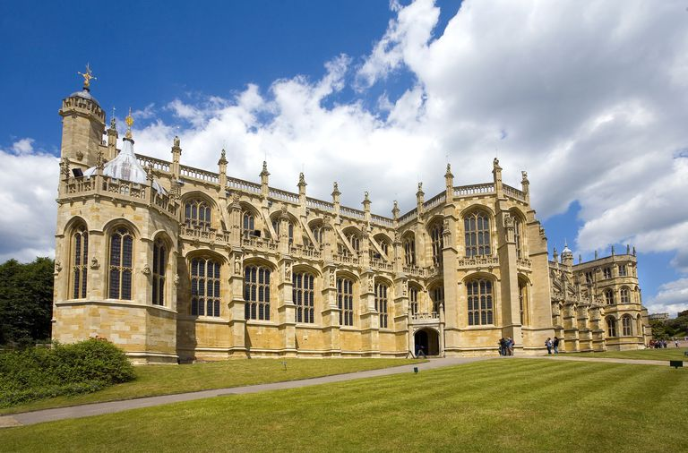
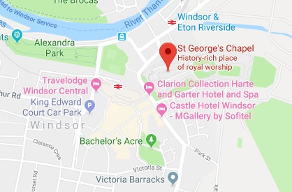

St George's Chapel at Windsor Castle in England, is a chapel designed in the high-medieval Gothic style. It is both a Royal Peculiar, a church under the direct jurisdiction of the monarch, and the Chapel of the Order of the Garter. Seating approximately 800, it is located in the Lower Ward of the castle.